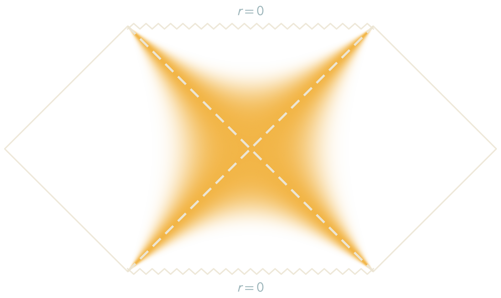
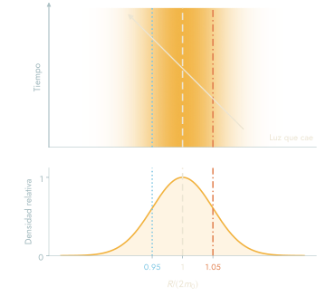
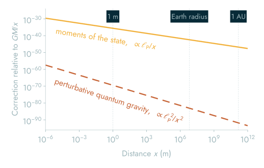
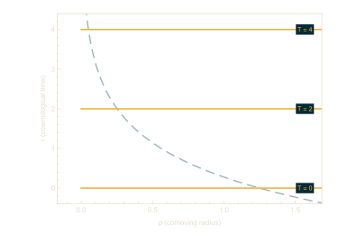
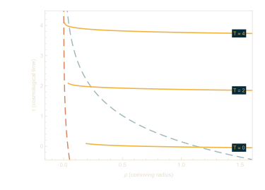
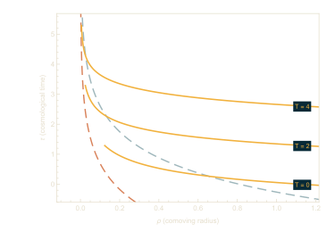
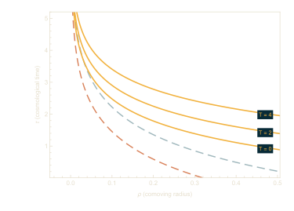
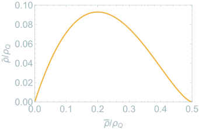
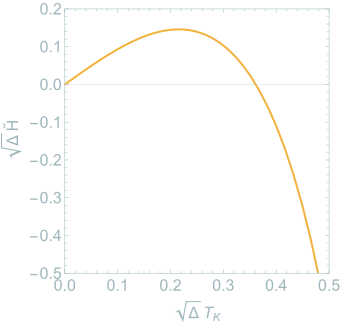
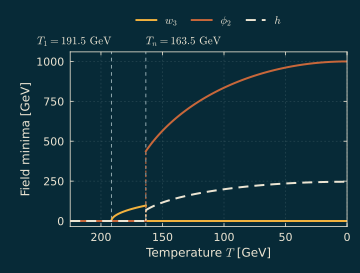

Cuando la constante cosmológica puede variar, la masa de un agujero negro corresponde a su entalpía. Las membranas que cambian los acoplamientos gravitacionales al pasar de un lado a otro convierten esta variación en un proceso físico.
Estudio si las membranas cargadas que modifican la constante de Newton y los acoplamientos gravitacionales de los términos de curvatura superior en la gravedad de Lovelock pueden portar energía negativa fuera de un agujero negro, en ergósferas de membrana, y si el agujero negro puede absorber esa energía de acuerdo con su termodinámica. La gravedad de Lovelock generaliza la relatividad general a dimensiones superiores y conserva ecuaciones de campo de segundo orden. Una pregunta similar se plantea para los agujeros negros de Born-Infeld.
Entalpía de un agujero negro. Izquierda: formar un agujero negro de volumen V en un universo con constante cosmológica requiere su energía U, junto con el trabajo PV contra la presión P = −Λ/8πG. Centro: por lo tanto, la masa es la entalpía, M = U + PV (Kastor, Ray y Traschen, 2009). Derecha: una membrana a través de la cual cambia Λ, con presión P1 en el interior y P2 en el exterior, cambia la presión alrededor del agujero negro cuando cae en él. La primera ley queda como δM = T δS + V δP.
El diagrama de Penrose de un agujero negro en el espacio de de Sitter, de mi trabajo con David Kastor, muestra los horizontes del agujero negro y de de Sitter con líneas discontinuas. Una membrana esférica puede tener energía negativa en dos ergósferas de membrana distintas: entre el horizonte del agujero negro y la curva azul, y entre la curva roja y el horizonte de de Sitter.Con las ergósferas separadas, una membrana con energía negativa sale del horizonte del agujero blanco, invierte su movimiento y cae al agujero negro. La otra cruza el horizonte pasado de de Sitter, invierte su movimiento y sale por el horizonte futuro. Las flechas indican la dirección del tiempo y los círculos marcan los puntos de retorno.Para un agujero negro de mayor masa, las dos ergósferas se unen en una sola región sombreada y una membrana puede tener energía negativa en cualquier punto entre los horizontes. Cada membrana tiene un punto de retorno. Una sale del horizonte del agujero blanco y cae al agujero negro. La otra cruza el horizonte pasado de de Sitter y sale por el futuro.Cuando las ergósferas se unen y la energía de las membranas se acerca a cero, las membranas se cruzan entre los horizontes sin invertir su movimiento. Una se expande desde el horizonte del agujero blanco, cruza el horizonte futuro de de Sitter y llega al infinito. Su inversa temporal cruza el horizonte pasado y cae directamente al agujero negro.
Agujeros negros cuánticos como geometrías fluctuantes
Con Martin Bojowald
En los métodos canónicos efectivos, un estado cuántico se describe mediante los valores esperados de los operadores canónicos y sus fluctuaciones y correlaciones. Con Bojowald, utilicé estos métodos para mostrar que las correcciones cuánticas semiclásicas pueden conservar el álgebra de constricciones de la gravedad con simetría esférica. Esto permitió estudiar agujeros negros cuánticos estáticos. Para estados semiclásicos genéricos, estos agujeros negros y sus superposiciones son geometrías fluctuantes. Sus correcciones cuánticas al potencial de Newton son de primer orden en la longitud de Planck, mayores que las de segundo orden de la gravedad cuántica perturbativa.


Masa menor, R = 2m0 − 2σmMasa media, R = 2m0Masa mayor, R = 2m0 + 2σm
Se representa un agujero negro cuya masa está en una superposición, en unidades con G = c = 1, mediante tres paneles. El panel superior es el diagrama de Penrose de la masa media, en el que las diagonales discontinuas representan sus horizontes en el radio 2m0 y el sombreado dorado representa los radios en los que puede estar el horizonte. El panel central muestra el radio contra el tiempo en coordenadas de Eddington-Finkelstein entrantes, en las que el horizonte de cada rama es una línea vertical en su propio radio; las líneas representan el radio medio y los radios 2m0 − 2σm y 2m0 + 2σm, que son los radios del horizonte de las ramas con masas m0 − σm y m0 + σm. La luz que cae cruza toda la banda. El panel inferior representa la densidad de probabilidad del radio del horizonte R, dibujada como una gaussiana a modo de ilustración y escalada para que su máximo sea uno, con las mismas tres líneas. El sombreado dorado en una esfera de radio r sigue esta densidad en R = r. El ancho σm/m0 = 0.05 está exagerado para que la dispersión sea visible.

Se grafica, en función de la distancia, la corrección cuántica principal al potencial de Newton relativa a GM/x. La línea continua representa la corrección obtenida de los momentos del estado, con las ecuaciones (42) y (45) de nuestro artículo sobre superposiciones de espaciotiempos, con bU0 = ℓP4, el orden de magnitud que permiten las dos cotas del texto, y el valor de C que hace mínima la corrección dentro de la cota C4 < 64bU0. Decrece como ℓP/x. La línea discontinua muestra la corrección (41/10π)ℓP2/x2 obtenida en gravedad cuántica perturbativa (Bjerrum-Bohr, Donoghue y Holstein, 2003), que decrece como ℓP2/x2. Aun en su valor mínimo, la corrección de los momentos es mayor que la perturbativa en todas las distancias mostradas. Como es proporcional a (bU0)1/4, esto se mantiene a menos que bU0 sea más de cien órdenes de magnitud menor que ℓP4. Ninguna de las dos depende de la masa, y ambas valen para distancias mucho mayores que el radio de Schwarzschild.
En la aproximación asintótica de este modelo, lejos del agujero negro, mostré que exigir la covariancia del elemento de línea corregido de un agujero negro cuántico estático impone una cota superior a las fluctuaciones de una componente de la métrica. El principio de incertidumbre por sí solo no impone esa cota. Junto con el principio de incertidumbre, la cota también limita por abajo las fluctuaciones del momento conjugado a esa componente, que es la curvatura extrínseca de las secciones espaciales. Para hacer predicciones hay que fijar el producto de incertidumbres del estado. En esta aproximación, la cota superior implica que la varianza del área de una esfera lejos del agujero negro es a lo sumo del orden de su área en unidades de Planck. Zurek y sus colaboradores han obtenido una cota inferior del mismo orden para un diamante causal (Ciambelli, He y Zurek, 2025). Juntas, las dos cotas restringen qué estados cuánticos están permitidos y fijan un tamaño mínimo para la corrección cuántica al potencial de Newton, que se muestra en la figura de arriba. Un agujero negro que es estático en promedio es entonces una superposición de geometrías en colapso y en expansión. El efecto es despreciable para agujeros negros mucho mayores que la longitud de Planck, pero podría ser relevante para los agujeros negros primordiales.
Las fluctuaciones y correlaciones que utilizo aquí son los momentos de segundo orden del estado. La página sobre momentos muestra qué información conserva y cuál omite una descripción por momentos.
Quiero determinar cómo se comportan estas fluctuaciones en el horizonte al incluir perturbaciones sin simetría esférica y correlaciones entre puntos. También quiero saber si las oscilaciones cuánticas de superposiciones perturbadas emiten ondas gravitacionales.
Simulación cuántica de sistemas con constricciones
En una simulación cuántica se estiman valores esperados, fluctuaciones y correlaciones mediante una serie de mediciones. Los métodos canónicos efectivos también calculan esas cantidades. Quiero usar estos métodos para predecir los resultados de simulaciones de sistemas con constricciones, diagnosticar errores que las violan e identificar cuándo resultan insuficientes los truncamientos sencillos. El rebote en el registro cuántico es un primer caso de prueba con solución exacta.
Dos truncamientos
En el cálculo con qubits conservo los 2n estados propios de menor volumen (donde n es el número de qubits). En las ecuaciones de momentos conservo todos los momentos hasta el orden N. Para el rebote que admite una solución exacta puedo variar n y N de forma independiente y comparar ambos cálculos con la evolución exacta. Cuando incorporo una interacción, tengo que comprobar la convergencia en n antes de usar los resultados con qubits para evaluar la expansión en momentos. ¿Qué valor de N necesito para seguir el rebote con una precisión dada?
ExactaRegistros de 5 a 8 qubits, con los puntos donde se aparta la mediaEcuaciones de momentos de segundo orden
Dos métodos para calcular un rebote con solución exacta. Con registros de 5, 6, 7 y 8 qubits, el volumen medio (izquierda) y su varianza (derecha) siguen las curvas exactas hasta que los registros se saturan. En el caso del volumen medio, esto ocurre en φ = 1.24, 1.93, 2.62 y 3.31, respectivamente. Las ecuaciones de momentos de segundo orden, con dos valores esperados y tres momentos, también reproducen la solución exacta.
Un rebote en un registro cuántico
En un modelo con solución exacta de un universo lleno de un campo escalar libre sin masa, el volumen alcanza un mínimo y vuelve a crecer. Las ecuaciones cierran de manera exacta. Al usar el campo escalar φ como reloj, el volumen medio es Vb cosh φ y sus fluctuaciones también obedecen ecuaciones exactas.
Una computadora cuántica con n qubits puede representar los 2n niveles de volumen más bajos y reproduce el rebote exacto durante un intervalo finito. Cada qubit adicional extiende ese intervalo en alrededor de ln 2 unidades de tiempo relacional.
La curva punteada satisface las ecuaciones de momentos de segundo orden. En este modelo, el volumen medio y la media de su tasa de cambio respecto de φ, junto con sus dos varianzas y su covarianza, satisfacen ecuaciones lineales cerradas. Por eso la curva coincide con la solución exacta.
ExactaEcuaciones de momentos de segundo ordenRegistro de n qubitsNivel máximo del registro
El registro se representa como una red de qubits junto a sus niveles de volumen, ordenados del más bajo al más alto. Las barras doradas representan el estado en el rebote. Cada qubit adicional duplica el número de niveles. El estado puede crecer más antes de alcanzar el nivel máximo (la línea discontinua de la gráfica), y el registro reproduce el rebote exacto durante más tiempo.
Simulación clásica del modelo de M. Bojowald, Phys. Rev. D 75, 081301 (2007). El estado gaussiano tiene Vb = 8.5 unidades de volumen en el rebote. El registro se aparta del resultado exacto cuando la diferencia supera una parte en mil.
Utilicé Qiskit para simular un circuito cuántico que representa un universo que se contrae, alcanza un volumen mínimo y vuelve a expandirse. La solución exacta me permitió determinar durante cuánto tiempo el circuito reproducía el volumen medio.
Con un paso temporal grande, los circuitos de 6 y 8 qubits perdieron precisión casi en el mismo punto. Con pasos más pequeños, el circuito de 8 qubits reprodujo la solución exacta durante más tiempo, pero requirió muchas más compuertas. Quiero determinar si un circuito que aproveche la estructura del modelo puede alcanzar la misma precisión con menos compuertas al aumentar el número de qubits.
Momentos de un estado que atraviesa una barrera por efecto túnel
Mis artículos con Martin Bojowald y colaboradores sobre agujeros negros cuánticos y superposiciones de espaciotiempos describen el estado cuántico mediante sus momentos de orden bajo, y estas aproximaciones no llegan al horizonte. Esto plantea la pregunta de cuántos momentos se necesitan para describir un estado. El registro de arriba aborda esta pregunta en términos de qubits; aquí se aborda en términos de momentos, con una partícula que escapa de un pozo por efecto túnel, cuya evolución exacta se puede calcular y cuyo estado deja pronto de ser gaussiano.
Una partícula parte del reposo en un pozo detrás de una barrera, en el estado fundamental gaussiano de la aproximación armónica al pozo. El producto de sus dispersiones es el mínimo que permite el principio de incertidumbre, Δq Δp = ħ/2. Se resuelve exactamente la ecuación de Schrödinger y el estado atraviesa la barrera por efecto túnel.
El estado exacto se aproxima de manera estática en cada instante con sus momentos de posición hasta el orden N, a partir de los cuales se dibuja la curva de entropía máxima. En ciertos instantes, el estado exacto requiere un número distinto de momentos para aproximarse mejor. Al principio el estado es gaussiano y el segundo orden es exacto. Cuando el estado se divide a ambos lados de la barrera, el segundo orden no puede representar la parte que la atravesó, mientras que el cuarto orden sí puede. Al final, incluso al octavo orden se le escapa parte de la forma.
En la gráfica inferior está la probabilidad de encontrar la partícula más allá de la cima de la barrera. Se acerca mucho más a la exacta que la forma del estado, en parte por la manera en que se dibujan las curvas (entropía máxima). Los momentos por sí solos solo pueden acotarla: con los primeros cuatro momentos en t = 4 puede valer cualquier cosa entre 0.15 y 0.68 para distribuciones en el intervalo de q que se muestra, y el valor exacto es 0.38 mientras que el de entropía máxima es 0.36.
Estado exactoOrden 2Cima de la barreraExactaOrden 2
Arriba: la región sombreada representa la densidad de probabilidad del estado exacto en el tiempo t, y la línea discontinua, la distribución reconstruida a partir de los momentos de posición hasta el orden elegido. La línea punteada indica la cima de la barrera y la curva tenue representa el potencial. Abajo: la probabilidad de encontrar la partícula más allá de la cima de la barrera en función del tiempo, para la solución exacta y para el orden elegido. Los puntos indican el tiempo actual; al reproducir, las curvas se trazan hasta ese punto.
Para el orden N, la curva representa la distribución de entropía máxima entre todas las que comparten los momentos ⟨q⟩, ⟨q2⟩, …, ⟨qN⟩ del estado exacto, sin suposiciones adicionales. Solo se consideran momentos de posición; los métodos canónicos efectivos usan momentos de posición y de momento lineal, relacionados por el principio de incertidumbre. El estado no evoluciona según las ecuaciones de momentos. El estado exacto se describe con un conjunto truncado de momentos. El potencial es V(q) = (27/4) Vtop γ q²(q − 1)(q − 1/γ), con Vtop = 1, γ = 1/2, ħ = 1/4 y masa unitaria. La cima de la barrera está en q ≈ 0.61, donde V ≈ 0.68. Vtop coincide con la altura de la barrera solo en el límite γ → 0.
Agujeros negros e inflación
Con Jennie Traschen y Sofia Corbà
Estudio cómo un agujero negro presente desde una época anterior a la inflación puede cambiar cuánto dura la inflación para un potencial dado. En la descripción usual, el inflatón es constante en las secciones de tiempo cosmológico constante y el número de e-folds mide cuánto crece una región entre dos de estas secciones. En presencia de un agujero negro, el inflatón deja de ser constante en ellas. Gregory, Kastor y Traschen encontraron soluciones de rodamiento lento en las que el inflatón depende únicamente de una coordenada temporal que varía con el radio, T (2017, 2018). En el artículo en preparación con Sofia Corbà y Jennie Traschen, usamos esta coordenada temporal para calcular el número de e-folds comparando los volúmenes espaciales de las regiones inflacionarias final e inicial en secciones de T constante. Así se recupera la expresión usual en ausencia de un agujero negro.




Superficies de T constante, en las que el inflatón es constante, representadas en función del tiempo cosmológico τ y el radio comóvil ρ. Sin agujero negro, son secciones de τ constante. Con un agujero negro (cuyo radio del horizonte rb se expresa como fracción del radio del horizonte cosmológico rc), las superficies se curvan hacia arriba al acercarse al agujero negro. Cerca de él, el inflatón alcanza cada valor más tarde. Las líneas discontinuas indican el horizonte cosmológico (claro) y el del agujero negro (naranja). Del artículo en preparación con Sofia Corbà y Jennie Traschen.
El siguiente paso es terminar de incorporar la retroacción del inflatón sobre la métrica conforme evoluciona.
En relatividad general, el corchete de dos constricciones hamiltonianas tiene como función de estructura la inversa de la métrica espacial. Cuando una constricción modificada cambia esta función, define una métrica espacial emergente. La covariancia exige una condición adicional al cierre del álgebra de constricciones. Este es el principio de la gravedad modificada emergente. Con Bojowald y Erick Duque, extendí estas condiciones a fondos cosmológicos perturbados y encontré que los modelos conocidos de cosmología cuántica de lazos carecen de covariancia o conservan una singularidad física a pesar del rebote.

Densidad de energía emergente ρ̃ en función del parámetro de densidad ρ̄ (ambos en unidades de ρQ) para el modelo sin anomalías con correcciones de holonomía de Cailleteau, Mielczarek, Barrau y Grain. El desgarramiento ocurre en ρ̄ = ρQ/2 (donde ρ̃ se anula porque el volumen diverge) y el rebote ocurre en ρ̄ = ρQ/8. Durante el colapso entre ambos puntos, ρ̃ alcanza un máximo menor que 0.1 ρQ. Adaptación de Bojowald, Díaz y Duque (2026).

Parámetro de Hubble emergente ℋ̃ (en unidades de 1/√Δ) en función de la coordenada temporal √Δ TK (que decrece hacia el futuro). El universo clásico en expansión corresponde al límite en que TK tiende a cero, el rebote ocurre en √Δ TK ≈ 0.36 y el desgarramiento en π/4 (más allá del borde derecho). Adaptación de Bojowald, Díaz y Duque (2026).
Estudio cómo construir rebotes covariantes y libres de singularidades, sin introducir grados de libertad nuevos, de modo que las perturbaciones puedan evolucionar a través de ellos. El espectro primordial que deja un rebote así es una predicción del modelo. En PHENO 2026 presenté la gravedad modificada emergente como modelo de energía oscura dinámica sin grados de libertad nuevos, a partir de la evidencia de DESI en favor de una energía oscura que evoluciona.
Estudié el caso de referencia BM1 de Ghosh, Guo, Han y Liu (un sector oscuro SU(2) acoplado al Modelo Estándar mediante el portal de Higgs). En mi cálculo a orden dominante a T alta, el campo oscuro w3 adquiere de manera continua un valor distinto de cero a 191.5 GeV. Después ocurre una transición de fase de primer orden: la nucleación ocurre a 163.5 GeV y la percolación a 159.1 GeV (para una velocidad de la pared de la burbuja de 0.9c). La temperatura de nucleación es de alrededor del 92% de la temperatura crítica (177.1 GeV), por lo que el superenfriamiento es leve. La intensidad de la transición α, definida a partir del calor latente, es de 0.115 en la nucleación y de 0.154 en la percolación. La razón β/H vale 717 en la nucleación y 311 en la percolación. Calculé las acciones del efecto túnel con un programa propio para varios campos, que usa el método del potencial del efecto túnel de Espinosa y Konstandin (2019).

Mínimo que ocupa el universo al enfriarse, según mi cálculo a orden dominante. El campo w3 toma un valor distinto de cero a 191.5 GeV y crece hasta la transición a 163.5 GeV. La gráfica salta entonces a la fase en la que h y φ2 tienen valores distintos de cero. A temperatura cero alcanzan 246 GeV y 1 TeV, respectivamente.
El Proyecto Betelgeuse se propuso responder una pregunta: ¿cómo saber cuándo explotará Betelgeuse? Para averiguarlo, realicé simulaciones de progenitores de supernovas con el código de evolución estelar MESA. El equipo comparó los resultados con la luminosidad, la temperatura y el radio observados de la estrella. La sorpresa fue su rotación. Una estrella debería girar más despacio al expandirse hasta convertirse en una supergigante roja, como una patinadora artística que abre los brazos, debido a la conservación del momento angular. Betelgeuse parece girar mucho más rápido de lo que los modelos de evolución de una estrella aislada podían explicar. Su momento angular adicional tenía que venir de alguna parte, y Wheeler propuso que provenía de una estrella compañera que Betelgeuse engulló al expandirse. Las simulaciones solo permitían seguir la evolución de la estrella hasta el inicio del colapso del núcleo. Querer saber qué ocurre después, cuando la gravedad toma el control, me llevó a interesarme en los agujeros negros.
Evolución de una estrella de 20 masas solares sin rotación, desde el inicio del quemado de H en el núcleo hasta 8.7 millones de años después. El modelo usa el criterio de Schwarzschild para la convección, sin extensión convectiva más allá del límite. A la izquierda, su trayectoria en el diagrama de Hertzsprung-Russell; a la derecha, el diagrama de Kippenhahn y un corte transversal de la estrella. El video termina cuando el núcleo de hierro de 1.6 masas solares comienza a colapsar.